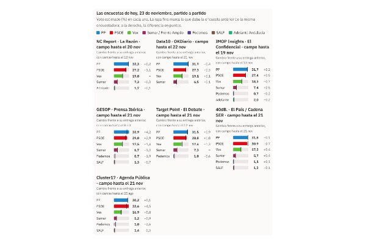

Actualidad · Getafe-Atlético · España
Getafe-Atlético: en la ciudad del Coliseum, el PSOE pasó de ganar en 112 de las 122 secciones a ganar en 74, y el PP se quedó a 2.182 votos
El día del Getafe-Atlético, Getafe sección a sección en las elecciones generales. El PP pasó del 18,2 % al 32,2 % entre 2019 y 2023; en Getafe Norte, el barrio del estadio, el PSOE ganó en 7 de 9 secciones.
Por Nacho G. del Álamo ·
Cada párrafo lleva una etiqueta: dato (cifra comprobable con las fuentes), patrón (relación que se repite, sin afirmar la causa), hipótesis (explicación posible, sin dos fuentes independientes) o contexto (hechos y declaraciones publicados por otros, enlazados). Cómo verificamos
ContextoEste domingo, a las 21.00, el Getafe recibió al Atlético de Madrid en el Coliseum, en la jornada 13 de LaLiga, según el horario que publicó El Debate. El Atlético ganó por 0-3, según la crónica de COPE. El estadio está en Getafe Norte, uno de los barrios de Getafe, una ciudad del sur de Madrid de 185.899 habitantes, según el padrón municipal de 2023 (INE). A siete días de las elecciones generales del 29N, Getafe es uno de los cuatro municipios grandes de la Comunidad de Madrid donde el PSOE fue el más votado en 2023, con Fuenlabrada, Parla y Leganés, como contamos en lo que queda del cinturón rojo.
DatoEn las generales de julio de 2023, el PSOE sacó en Getafe el 34,4 % y el PP, el 32,2 %: 34.222 votos frente a 32.040, una diferencia de 2.182 votos. Cuatro años antes, en noviembre de 2019, el PP se había quedado en el 18,2 %, con Ciudadanos todavía en la papeleta. El PSOE apenas cambió: del 32,1 % al 34,4 %.
DatoNo siempre ganó el PSOE. En 2011, el PP sacó en Getafe el 42,4 %, y volvió a ser el más votado en 2015, cuando Podemos e Izquierda Unida se presentaron por separado, y en 2016. Desde abril de 2019, el primero es el PSOE.
Ver la tabla
| Elección | PP (%) | PSOE (%) | Votos PP | Votos PSOE | Participación (%) |
|---|---|---|---|---|---|
| 2011 | 42,4 | 31,9 | 39.047 | 29.410 | 78,5 |
| 2015 | 25,7 | 22,6 | 25.896 | 22.815 | 81,0 |
| 2016 | 29,4 | 24,6 | 28.270 | 23.692 | 76,7 |
| abr. 2019 | 13,6 | 32,5 | 14.360 | 34.404 | 81,9 |
| nov. 2019 | 18,2 | 32,1 | 18.139 | 32.103 | 76,9 |
| 2023 | 32,2 | 34,4 | 32.040 | 34.222 | 75,4 |
De 112 secciones a 74
DatoDonde más se nota el cambio es sección a sección. En noviembre de 2019, el PSOE fue el más votado en 112 de las 122 secciones censales de Getafe, y el PP, en 7. En 2023, el PSOE ganó en 74 y el PP, en 45; Sumar fue primero en 2 y en otra hubo empate a votos.
ContextoGetafe fue el lugar que eligió el PSOE para cerrar la campaña de 2023. Pedro Sánchez lo hizo en el polideportivo de La Alhóndiga, el 21 de julio, ante unas 4.500 personas, según Infobae:
«Vamos a ganar las elecciones y las vamos a ganar rotundamente»
DatoEn las 15 secciones del barrio de La Alhóndiga, el PSOE ganó en 14, con el 38,7 %.
El barrio del Coliseum
DatoEn Getafe Norte, el barrio del estadio, el PSOE ganó en 7 de las 9 secciones en 2023, con el 36,0 % frente al 31,2 % del PP. En 2019 había ganado las 9, y el PP se había quedado en el 16,7 %. La renta mediana del barrio es de 24.816 € por unidad de consumo, por encima de la de la ciudad (21.799 €).
DatoLos barrios donde ganó el PP son los de más renta y el centro. En el Sector III, el PP ganó 13 de las 20 secciones, con el 33,9 %; votó el 81,0 % y la renta mediana es de 28.547 €. En El Bercial, el PP pasó de no ganar ninguna sección a ganar 5 de 9, y del 17,8 % al 36,1 %. En el Centro, donde más votó al PP, ganó 13 de 19 con el 36,8 %. Al otro lado, en Juan de la Cierva, el PSOE ganó 19 de las 21 secciones con el 43,1 %, y votó el 68,1 %.
Ver la tabla
| Barrio | PP | PSOE | Sumar | Vox | Participación | Renta mediana (€) | Secciones | Ganadas por el PP en 2023 | Ganadas por el PSOE en 2023 | Ganadas por el PSOE en 2019 |
|---|---|---|---|---|---|---|---|---|---|---|
| Centro | 36,8 | 32,1 | 16,3 | 12,8 | 74,1 | 21.660 | 19 | 13 | 6 | 14 |
| El Bercial | 36,1 | 31,4 | 17,9 | 12,3 | 79,6 | 28.357 | 9 | 5 | 4 | 9 |
| Sector III | 33,9 | 30,4 | 22,1 | 11,4 | 81,0 | 28.547 | 20 | 13 | 6 | 18 |
| Los Molinos | 28,9 | 29,0 | 25,5 | 13,6 | 81,1 | 29.669 | 5 | 2 | 1 | 4 |
| Getafe Norte | 31,2 | 36,0 | 19,2 | 11,5 | 78,5 | 24.816 | 9 | 2 | 7 | 9 |
| Las Margaritas | 30,2 | 39,2 | 16,7 | 12,0 | 68,8 | 15.134 | 8 | 1 | 7 | 8 |
| La Alhóndiga | 29,2 | 38,7 | 18,2 | 11,5 | 73,5 | 17.639 | 15 | 1 | 14 | 15 |
| Juan de la Cierva | 28,5 | 43,1 | 15,1 | 11,0 | 68,1 | 17.824 | 21 | 2 | 19 | 21 |
La renta, sección a sección
PatrónSi se ordenan las secciones de Getafe por renta y se parten en cinco grupos iguales, el PSOE gana en las 25 de la quinta parte más pobre, con el 43,5 %, frente al 26,8 % del PP. En la quinta parte más rica, el PP gana en 21 de 25, con el 36,2 %, frente al 29,8 % del PSOE. La participación va del 66,0 % al 81,7 %.
Ver la tabla
| Quintil | Renta mediana (€) | PP | PSOE | Sumar | Vox | Participación | Secciones | Ganadas por el PP | Ganadas por el PSOE |
|---|---|---|---|---|---|---|---|---|---|
| 1.º | 16.675 | 26,8 | 43,5 | 15,9 | 11,6 | 66,0 | 25 | 0 | 25 |
| 2.º | 18.354 | 28,6 | 41,4 | 16,7 | 11,0 | 69,8 | 24 | 2 | 22 |
| 3.º | 21.799 | 33,4 | 34,1 | 17,5 | 12,8 | 74,7 | 24 | 12 | 12 |
| 4.º | 26.498 | 32,2 | 31,0 | 21,4 | 13,0 | 78,8 | 24 | 10 | 11 |
| 5.º | 31.341 | 36,2 | 29,8 | 19,1 | 12,6 | 81,7 | 25 | 21 | 4 |
PatrónEs el mismo patrón que en Sevilla, donde se jugó ayer el derbi, pero con distancias más cortas: en la quinta parte más rica de Getafe, el PP saca de media el 36,2 %; en la de Sevilla, sacó casi el 60 %, como contamos en el derbi sevillano en las urnas.
Y el Metropolitano
DatoEl estadio del Atlético está en Rosas, en el distrito de San Blas-Canillejas, al este de Madrid. En sus 17 secciones, el PP ganó en 16 en 2023, con el 39,3 %, frente al 29,7 % del PSOE. En toda la ciudad de Madrid, el PP sacó el 41,8 % y el PSOE, el 27,4 %. Cómo vota el distrito del Metropolitano frente al del viejo Calderón lo contamos en el Atlético-Barça en las urnas.
DatoGetafe y Madrid votan en la misma circunscripción, la provincia de Madrid, que elige 38 diputados. Nuestro modelo, que reparte por provincia la media de las encuestas nacionales, deja al PP primero en el 98 % de las simulaciones, con un reparto central de 16 escaños para el PP, 11 para el PSOE, 8 para Vox y 3 para Sumar, según la página de encuestas de Madrid, que se actualiza cada día.
Lo que estos datos no dicen
ContextoLas cifras de sección son de las generales de 2023 y de 2019. Las encuestas del 29N no miden ciudades ni barrios, solo provincias, y nuestro modelo no estima el voto dentro de Getafe. En 2019 no comparamos a Sumar, porque Unidas Podemos y Más País fueron por separado. Los quintiles comparan secciones de la misma ciudad: describen dónde se vota qué, no el efecto de la renta. 16 secciones no tienen barrio asignado en nuestro mapa y solo cuentan en los totales.
HipótesisY el fútbol no vota. La afición del Getafe y la del Atlético no viven solo junto a sus estadios, y nada de esto dice cómo vota cada una. Lo que sí muestra el mapa es que el Coliseum está en una ciudad que el PSOE ganó por 2.182 votos y en un barrio donde el PP subió 14,5 puntos en cuatro años. Las calles de cada sección están en cómo votó tu calle.
Preguntas frecuentes
¿Quién ganó las elecciones generales de 2023 en Getafe?
El PSOE, con el 34,4 %, por delante del PP (32,2 %): 34.222 votos frente a 32.040, 2.182 de diferencia.
¿Ha ganado alguna vez el PP en Getafe en unas generales?
Sí: en 2011, con el 42,4 %, y en 2015 y 2016. Desde abril de 2019 gana el PSOE.
¿Cómo vota el barrio del Coliseum?
En Getafe Norte, el PSOE ganó en 7 de las 9 secciones en 2023, con el 36,0 % frente al 31,2 % del PP.
Elecciones en Getafe · Encuesta de Madrid · Lo que queda del cinturón rojo · El Atlético-Barça en las urnas · El derbi sevillano en las urnas · Mestalla y el Bernabéu en las urnas
Método y fuentes
- Qué se compara
- Las generales de 2011 a 2023 en Getafe y las de noviembre de 2019 y julio de 2023 en sus 122 secciones censales, por barrio y por renta, con el barrio del Metropolitano (Rosas, Madrid).
- Límites
- Son datos de 2023 y 2019: las encuestas del 29N no miden ciudades ni barrios. Los barrios son los de OpenStreetMap; 16 secciones sin barrio asignado solo cuentan en el total. En 2019 no se compara a Sumar, porque Unidas Podemos y Más País fueron por separado. Los quintiles describen dónde se vota qué, no el efecto de la renta, y nada dice cómo vota cada afición.
- Cómo se calcula
- Voto de cada partido sobre el voto válido de las secciones del barrio (ponderado por votantes); participación sobre el censo; más votado de cada sección lista a lista. Quintiles: las secciones de Getafe ordenadas por renta por unidad de consumo y partidas en cinco grupos iguales. Estadios situados en su sección por coordenadas. Script: actualidad/src/resumenes/getafe_atletico.py. Cifras reproducibles con los scripts del expediente de la pieza. Metodología de Actualidad · Metodología del Atlas
- Fuentes
- Ministerio del Interior, resultados de las generales de 2011 a 2023 por municipio y sección censal
- INE, Atlas de Distribución de Renta de los Hogares (renta por unidad de consumo por sección)
- El Debate, horario del Getafe-Atlético (21-11-2026)
- COPE, crónica del Getafe-Atlético (22-11-2026)
- Infobae, cierre de campaña del PSOE en Getafe (21-7-2023)
- Mapa Electoral, encuesta de la provincia de Madrid
- Autoría
- Nacho G. del Álamo
- Revisión de datos y texto
- Nacho G. del Álamo, 22 de noviembre de 2026
- Publicado · actualizado
- 22 de noviembre de 2026 · 22 de noviembre de 2026
- Correcciones
- Ninguna.
Serie «Camino al 29N»: 175 piezas
- Encuestas y debate: tras el cara a cara de 2023, 10 de 14 encuestadoras ampliaron la ventaja del PP; trece días después ganó por 1,4 puntos
- Elecciones generales: una de cada tres secciones cambió de ganador entre 2019 y 2023
- Elecciones generales: las encuestas dan al PSOE entre el 25,5 y el 33,3 %
- Elecciones generales: Vox baja al 17 % en la encuesta diaria de El País
- Encuestas elecciones generales 2026, hoy 18 de noviembre: el PSOE, a dos puntos o menos del PP
- Encuestas elecciones generales 2026, hoy 19 de noviembre: Sondaxe deja al PSOE a 0,7 puntos del PP
- Debate Sánchez Feijóo: hora, dónde verlo y quién gana el cara a cara
- Elecciones generales: el modelo de encuestas da escaño al Frente Amplio en 5 de sus 17 provincias
- Elecciones generales: en Gijón, Vox sacó en 2023 su mejor resultado en Somió, el barrio más rico: 17,0 %
- Encuestas elecciones generales 2026, hoy 20 de noviembre: el PP gana en las cinco, por entre 2,0 y 4,6 puntos
- Veda de encuestas: hasta cuándo se pueden publicar las del 29N
- Cómo votar en las elecciones generales del 29N: horario, qué llevar y cómo saber tu colegio
- A qué hora se sabrán los resultados de las elecciones generales del 29N
- Participación en las elecciones generales del 29N: las encuestas prevén un 73,1 %, 2,7 puntos más que en 2023
- Elecciones generales del 29N en cifras: electores, escaños, candidaturas y mesas de cada provincia
- Encuestas elecciones generales 2026, hoy 23 de noviembre: PP y Vox suman mayoría absoluta en las siete
- Programa electoral de PP, PSOE, Vox y Frente Amplio: qué propone cada uno el 29N
- Estás aquíGetafe-Atlético: en la ciudad del Coliseum, el PSOE pasó de ganar en 112 de las 122 secciones a ganar en 74, y el PP se quedó a 2.182 votos
- El derbi sevillano se juega en barrios del PP: en Nervión, el del Sánchez-Pizjuán, ganó en 37 de 41 secciones; en la ciudad, el PSOE fue primero en 286 de 521
- A una semana del 29N, la mediana de las encuestas da al PP 3,4 puntos de ventaja, 1,2 menos que hace siete días; el lunes 23 es el último día para publicarlas
- Ver las 175 piezas de la serie
Más datos: elecciones en la Comunidad de Madrid · elecciones en Getafe barrio a barrio desde 1977 · Getafe calle a calle en el mapa electoral · elecciones generales del 29N de 2026: fecha y escaños por provincia · resultados de las elecciones generales 2026 (29N) y los de 2023 · dónde y cómo votar el 29N: colegio electoral, voto por correo y plazos.
Sigue leyendo

Encuestas de hoyEncuestas elecciones generales 2026, hoy 23 de noviembre: PP y Vox suman mayoría absoluta en las siete Camino al 29NElecciones generales del 29N en cifras: electores, escaños, candidaturas y mesas de cada provincia
Camino al 29NElecciones generales del 29N en cifras: electores, escaños, candidaturas y mesas de cada provincia ParticipaciónParticipación en las elecciones generales del 29N: las encuestas prevén un 73,1 %, 2,7 puntos más que en 2023
ParticipaciónParticipación en las elecciones generales del 29N: las encuestas prevén un 73,1 %, 2,7 puntos más que en 2023 Crónica de la semanaA una semana del 29N, la mediana de las encuestas da al PP 3,4 puntos de ventaja, 1,2 menos que hace siete días; el lunes 23 es el último día para publicarlas
Crónica de la semanaA una semana del 29N, la mediana de las encuestas da al PP 3,4 puntos de ventaja, 1,2 menos que hace siete días; el lunes 23 es el último día para publicarlas Sevilla-BetisEl derbi sevillano se juega en barrios del PP: en Nervión, el del Sánchez-Pizjuán, ganó en 37 de 41 secciones; en la ciudad, el PSOE fue primero en 286 de 521
Sevilla-BetisEl derbi sevillano se juega en barrios del PP: en Nervión, el del Sánchez-Pizjuán, ganó en 37 de 41 secciones; en la ciudad, el PSOE fue primero en 286 de 521 A qué hora los resultadosA qué hora se sabrán los resultados de las elecciones generales del 29N
A qué hora los resultadosA qué hora se sabrán los resultados de las elecciones generales del 29N